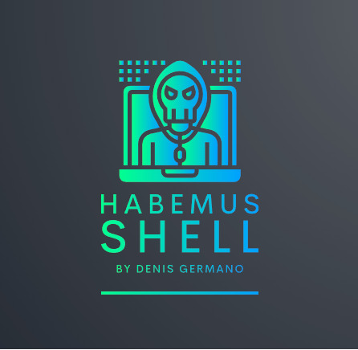

Bem-vindos
🌐🚀 Olá, hacker! Prepare-se para mergulhar de cabeça no fascinante universo da cibersegurança! Aqui, você encontrará o que precisa saber sobre as melhores práticas e desafios nessa jornada.
🛡️ Explore nossos Write-ups de CTFs: Desvende os segredos dos desafios de Capture The Flag com nossos artigos detalhados e dicas valiosas. Quer você seja um novato ou um veterano, sempre há algo novo para aprender!
Habemus Shell no YouTube

🎥 Não se esqueça do nosso Canal no YouTube!: Acompanhe o Habemus Shell para tutoriais, discussões e muito mais conteúdo em vídeo. Não perca as últimas atualizações e fique por dentro das novidades em cibersegurança!